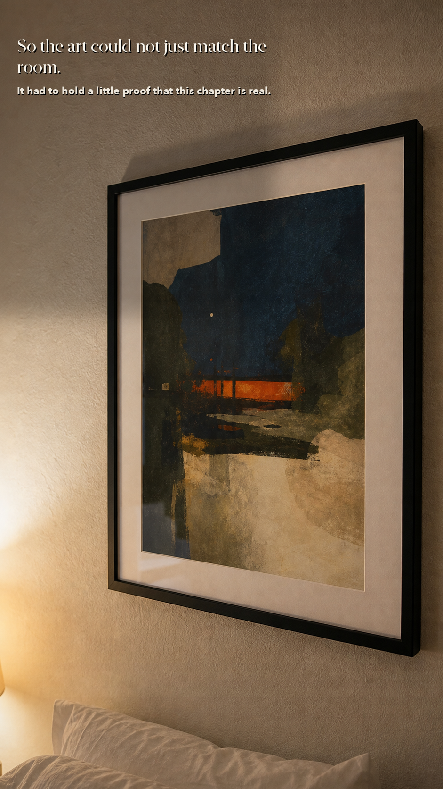
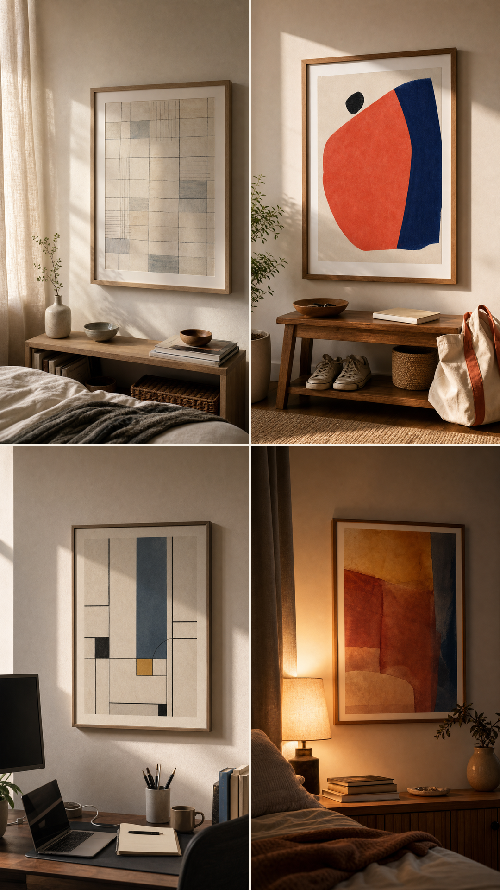
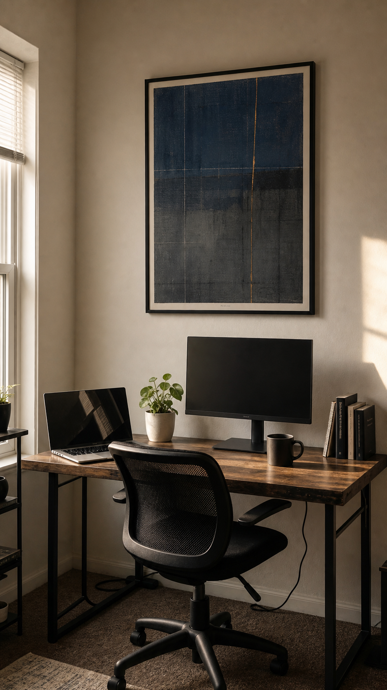
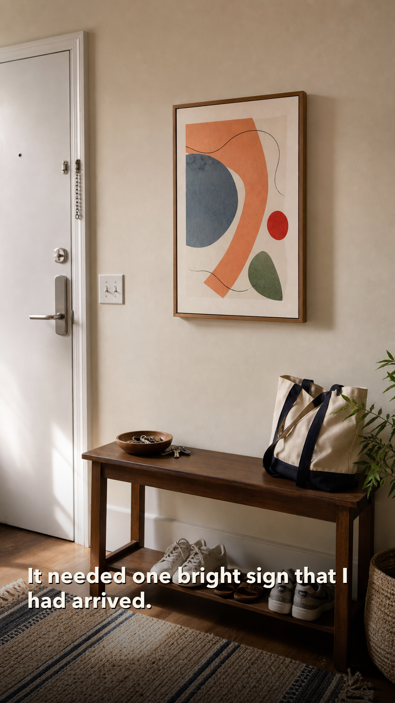
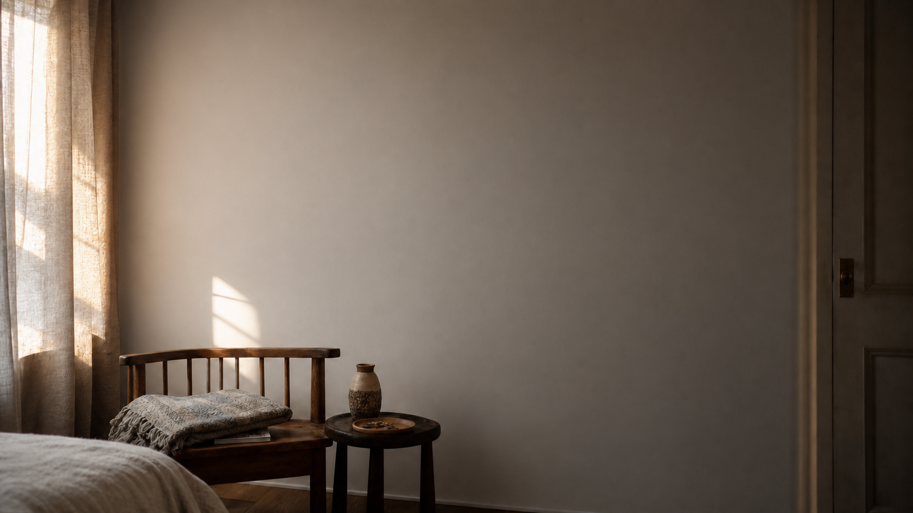
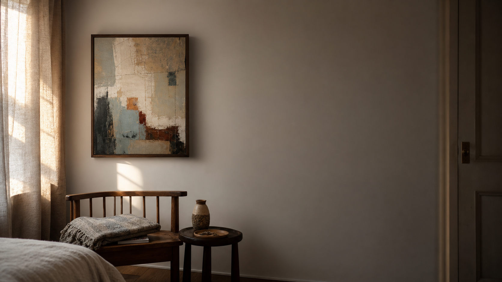
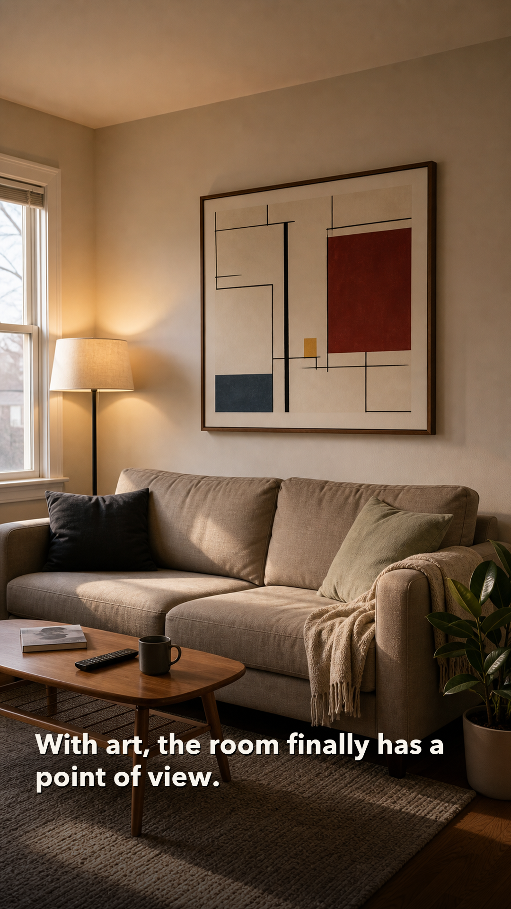
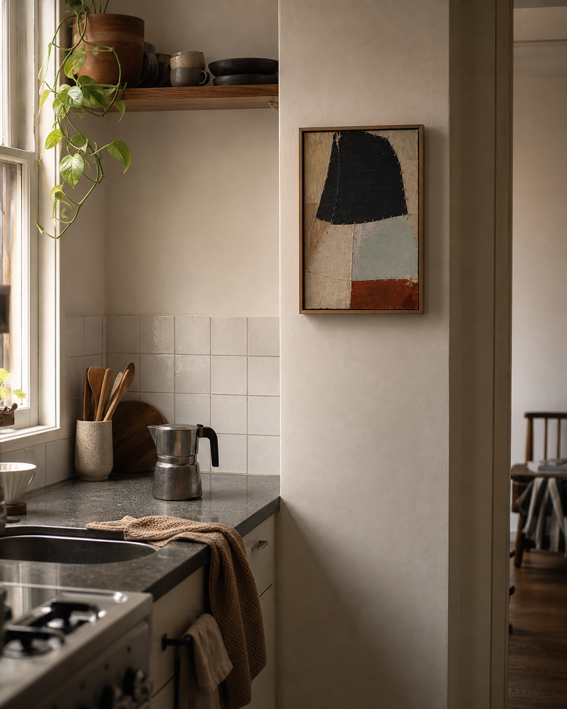
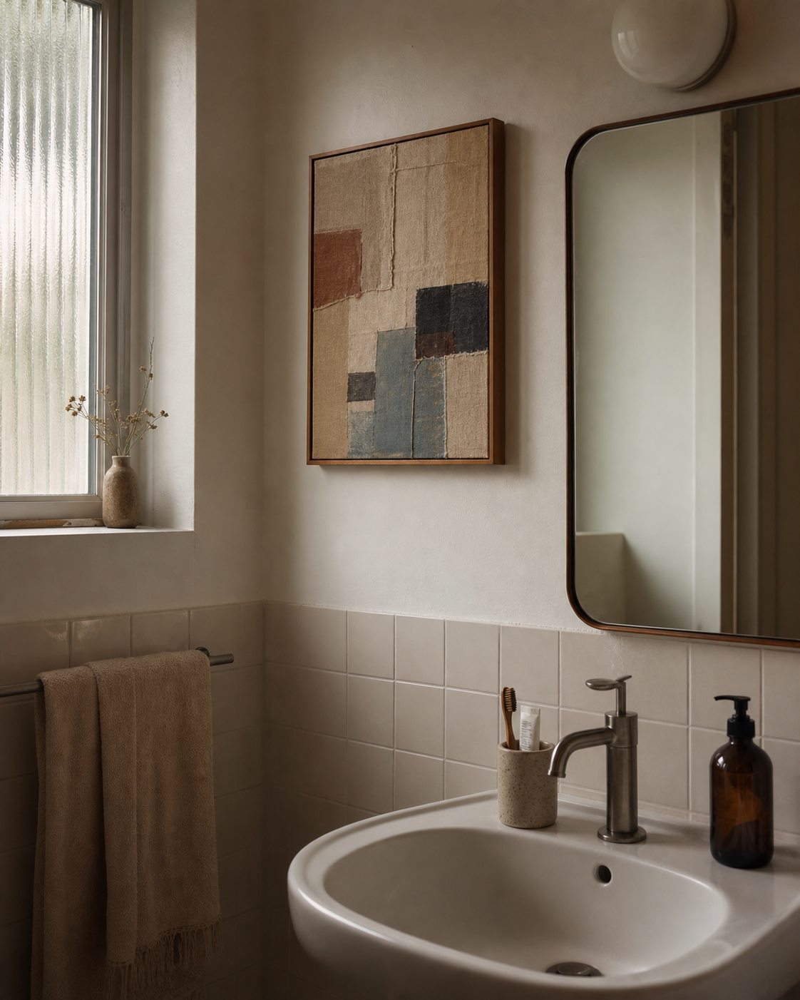

Bedroom
ELURA
Inner direction for the life you are living now
Discover yourself through art, and let your space hold it.
ELURA is not here to decorate the room first.
It starts with the feeling you keep walking past, then gives it a visible place to stay.


Before / after discovering yourself through art
A room can stay ordinary, then start holding something back for you.
Drag the line to see the same quiet corner before and after one feeling becomes visible.


Before
After

The room is only the surface.
Bedroom. Kitchen. Bathroom. Corridor. Laundry corner. Any ordinary place can hold a real part of you.
We look for the moment your current life is already leaving a trace: the mirror you meet in the morning, the keys at the door, the small desk, the wall beside the bed, the kitchen light after everyone leaves.


Where the direction can live
Not just a living room. The small repeated places matter.

Kitchen
Bathroom
Corridor
Here is the shape of the direction.
Look inward
We ask what has been moving inside you lately, before we ask what style you like.
Project
That inner state becomes visual weight, temperature, movement, silence, and edge.
Live with it
The artwork enters the room as something the space can keep reflecting back to you.
Existing directions and experiments
A space starts to feel different when one feeling becomes visible.

{kind=link}
{kind=link}
{kind=link}
{kind=link}
Start with the room you keep passing.